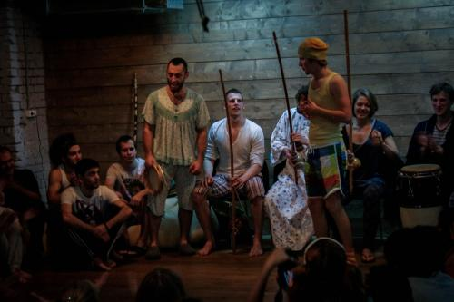

Стильные игры 4: После заката

Предисловие и немного географии
Всё началось весной, когда мы доброй половиной Аше поехали в Питер на третьи уже международные соревнования по капоэйре, которые организовала школа Мунду. Всё хотела написать о них большой отчёт, ибо это было легендарно: 12 часов капы с раздачей слонов медалей в финале и поздний ужин человек на сорок.
Тогда я и узнала, что ребята в Минске планируют устроить Стильные Игры. Я уже слышала об этом замечательном явлении, была знакома с Ботафогу и даже хотела сгонять в Минск, чтобы поучаствовать в рабоче-революционной роде, но случилась сессия. Мы с группой Босиком записали видео-послание в Беларусь с «И Ленин такой молодой», взгрустнули и продолжили жить дальше. Но мысль о Стильных не давала мне покоя:
Почему в Минске игры были, а у нас нет? И никто не знает, что это такое… Мы в арьергарде!!
Стильные Игры
Мы все взрослые люди и к чему устраивать маскарад?
К тому, что это верный способ снять ярлыки, найти новых друзей, получить интересный опыт, да и будет что вспомнить долгими зимними вечерами на тренировках.
В общем, надо было что-то делать. И я договорилась с Ботафогу устроить Стильные игры в Москве в конце августа. Разумеется, к концу августа мы об этом только вспомнили, встретились с ней и Ти-мэном и определили тему:
После заката
Для проведения нашлось идеальное пространство Yo Studio на заводе „Флакон“ с приглушённым светом и креслами-грушами, но надо было ещё как-то найти инструменты и собрать народ.
Я была очень приятно удивлена, количеству людей, готовых помочь с организацией. Мало того, что среди них были вообще не знакомые со мной люди, с организацией помогали мои друзья, которые в принципе не имеют отношения к капоэйре.
Территория Флакона часто простаивает, но Стильные пришлись на местный «День Нью-Йорка». Чтобы добраться до зала, приходилось продираться сквозь толпы хипстеров. Мы не купили какао, из «Босиком» смогли прийти только два с половиной человека без микрофона, и времени было маловато, но всё прошло просто потрясающе!!!
Администратор Йо-студии был явно в шоке от такого количества взрослых трезвых людей, которые переоделись в пижамы, обложились мягкими игрушками и веселились как дети.
Рода была очень радостная и светлая, все шутили, было много красивой игры. Я буду долго вспоминать этот вечер, надеюсь, вы тоже.
Пришли далеко не все, кто хотел, не все, кого хотелось бы видеть. Но это были первые стильные игры в Москве, и мероприятие собрало аж 8 школ капоэйры, в том числе Мунду, которые приехали из Питера. Давайте чаще так собираться, дурачиться и играть.
Всем обригадушки!
И в завершение немного
Фото
Boa noite, amigos!